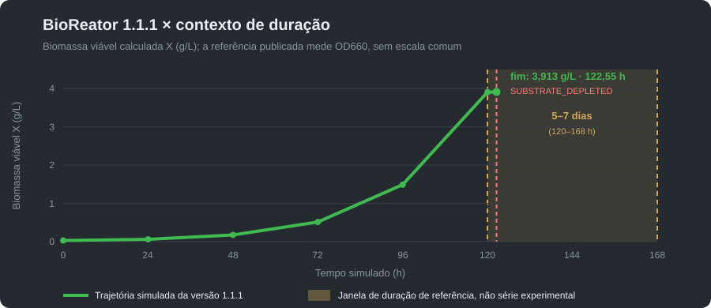

Esta página documenta primeiro a Community 1.1.1 publicada e preserva abaixo, claramente identificados, os cálculos históricos da 1.0.0. Os resultados são simulações didáticas: não são medições de planta nem procedimentos de produção.
A carga de referência usa tanque nominal de 100 L, 75 L de volume líquido, 1 vvm, 400 rpm, X₀ = 0,03 g/L, S₀ = 10 g/L, 28 °C e pH 6,8. O kLa calculado pelo pacote é 131,0455 h⁻¹.
O modelo multiplica Monod por fatores configurados de oxigênio, temperatura, pH e fase lag; a biomassa viável também sofre decaimento:
μ = μmax · S/(Ks + S) · DO/(KO + DO) · fT(T) · fPH(pH)1,25 · [1 − exp(−t/8 h)]
dXviável/dt = μ · Xviável − kd · Xviável; dS/dt = −μ · Xviável / Yx/s
qO₂ = μ / Yx/o + mo; OUR = qO₂ · Xviável
A biomassa total inclui a biomassa viável e a parcela acumulada que decaiu: Xtotal = Xviável + X que decaiu. A saturação de oxigênio de referência da carga é 7,8 mg/L.
| Parâmetro | Valor configurado | Unidade | Base e limite |
|---|---|---|---|
| μmax; Ks; Yx/s | 0,05; 0,25; 0,42 | h⁻¹; g/L; gX/gS | Perfil do simulador [R5, R11]; a forma de Monod e os balanços seguem [R1–R3]. Não são medições da cepa. |
| KO | 0,15 | mg O₂/L | Constante demonstrativa de limitação por oxigênio [R5]. |
| Yx/o; mo | 1,1; 0,007 | gX/gO₂; gO₂/(gX·h) | Parâmetros configurados de rendimento/manutenção; formulação de manutenção relacionada a [R9]. |
| Temperatura min.; ótima; máx. | 10; 28; 37 | °C | Pontos da função cardinal [R10], configurados no perfil. |
| pH min.; ótimo; máx.; expoente | 4,5; 6,8; 9,0; 1,25 | adimensional | Pontos e expoente configurados no perfil; função cardinal relacionada a [R10]. |
| Fase lag; kd | 8; 0,003 | h; h⁻¹ | Configuração didática [R5]; não ajustada a dados experimentais. |
| Conversão para UFC/mL | 2,0 × 10⁹ | UFC/mL por g/L de Xviável | Fator do perfil [R5]. Estimativa do software, não contagem laboratorial. |
| kLa na carga padrão | 131,0455 | h⁻¹ | Resultado do pacote com P/V pelo volume líquido; correlação de van’t Riet [R4]. |
A biblioteca [R1–R4, R9–R10] fundamenta as formas do modelo; ela não é a origem experimental dos valores de perfil. As constantes são configurações pedagógicas documentadas nas releases [R5, R11]. Consulte os fundamentos e referências completos.
A execução empacotada termina em 122,55 h (5,11 dias) por SUBSTRATE_DEPLETED. Ao fim, S = 0,000985 g/L, Xviável = 3,913056 g/L e Xtotal = 4,229586 g/L.

| Tempo (h) | X viável (g/L) | X total (g/L) | S (g/L) | OD (% sat.) | Evento |
|---|---|---|---|---|---|
| 0 | 0,030000 | 0,030000 | 10,000000 | 100,0000 | Início |
| 24 | 0,061072 | 0,063992 | 9,919066 | 99,7119 | — |
| 48 | 0,175655 | 0,186365 | 9,627702 | 99,1366 | — |
| 72 | 0,513039 | 0,546441 | 8,770378 | 97,4792 | — |
| 96 | 1,489489 | 1,589001 | 6,288093 | 92,7547 | — |
| 120 | 3,905962 | 4,192506 | 0,089271 | 92,6230 | S < 5% de S₀ |
| 122,55 | 3,913056 | 4,229586 | 0,000985 | 97,2462 | SUBSTRATE_DEPLETED |
A estimativa configurada é Xviável × 2,0 × 10⁹ ≈ 7,826 × 10⁹ UFC/mL. A literatura relata trajetórias de vários dias em outras cepas, meios e condições [R6–R8]; duração semelhante não demonstra equivalência entre o simulador e a produção real.
Baixar CSV didático completo · Ver o exemplo da versão 1.1.1 na loja.
O passo é Δt = 0,05 h. Biomassa e substrato usam Euler explícito, com μ avaliada no início do passo; a formação de biomassa é limitada pelo substrato disponível e o decaimento é aplicado depois da formação.
mX,formada = min(μn · Xn · V · Δt, Yx/s · Sn · V)
Xn+1 = (Xn + mX,formada/V) · exp(−kd·Δt); Sn+1 = Sn − mX,formada/(Yx/s·V)
OD não é integrado por Euler: para α = kLa e β = kLa·CL* − qO₂·1000·Xviável, o programa resolve exatamente CLn+1 = β/α + (CLn − β/α) · exp(−αΔt), usando OUR do início do passo. A telemetria da interface é emitida a cada 0,25 h simuladas; o integrador avança 0,05 h a cada 0,2 s de relógio real (aproximadamente 4 s por hora simulada).
O kLa usa a correlação de van’t Riet para meio coalescente: kLa = 0,026 · (P/V)0,4 · us0,5, com kLa em s⁻¹, P/V em W/m³ e velocidade superficial do gás em m/s. O cálculo converte o resultado para h⁻¹, usa P/V sobre o volume líquido e reduz a potência aerada pelo fator 0,5. Para a turbina Rushton, Np = 5, Di = D/3 e H = D; são hipóteses geométricas do simulador, não especificações de projeto.
O primeiro critério alcançado encerra o lote:
SUBSTRATE_DEPLETED: S ≤ 0,001 g/L.DO_SPIKE: com S < 5% de S₀, OD aumenta pelo menos 15 pontos percentuais da saturação em até 1 h.STALLED: após o lag, variação absoluta de X < 0,0001 g/L/h durante 12 h.MAX_TIME: limite padrão de 240 h.STOPPED: encerramento manual pelo operador.O motivo é registrado como end_reason no CSV e no lote local. A curva padrão encerra por SUBSTRATE_DEPLETED. Confira o manual técnico e critérios da loja.
Bradyrhizobium japonicum em batelada. Tanque de 100 L a 75% (75 L de caldo), 1 vvm, 400 rpm, 28 °C, pH 6,75. X inicial 0,20 g/L. S inicial 20 g/L. O oxigênio parte de 7,8 mg/L, a saturação de referência do simulador para ar perto de 28 °C.
O console estima kLa ≈ 157 h⁻¹, cerca de 122 W de agitação e cerca de 114 W de aeração, num cilindro de líquido com cerca de 0,46 m de diâmetro. A correlação é a de Van’t Riet para meio coalescente, com turbina Rushton (Po = 5, D/T = 1/3, H = T) e compressor ideal com 0,5 bar no sparger e rendimento 55%. Sem rotação ou sem ar, kLa fica em zero.
| Hora | X (g/L) | S (g/L) | OD (mg/L) | OD (%) | µ (h⁻¹) |
|---|---|---|---|---|---|
| 0 | 0,20 | 20,0 | 7,8 | 100 | 0,099 |
| 6 | 0,36 | 19,6 | 7,5 | 96 | 0,099 |
| 12 | 0,65 | 18,9 | 7,3 | 94 | 0,099 |
| 24 | 2,12 | 15,4 | 6,2 | 79 | 0,098 |
| cerca de 40 | 8,6 | esgotado | cerca de 1,2 | cerca de 16 | 0 |
Por volta de 38 h, S cai abaixo de 1 g/L (5% da carga) e o oxigênio dissolvido cruza 20% da saturação. Os avisos de substrato baixo e de hipóxia entram juntos. Por volta de 40 h o substrato acaba. A biomassa para em 8,6 g/L: 15 g iniciais mais 630 g formados dos 1.500 g de substrato. O rendimento imposto é 0,42 g/g e o erro relativo fica abaixo de 1e-6.
O oxigênio permanece perto de 16% depois que o crescimento para. O consumo específico continua proporcional à biomassa presente. A hipóxia fica no aviso e não reduz µ.
Neste perfil, µmáx = 0,10 h⁻¹, Ks = 0,25 g/L, Yxs = 0,42 g/g e qO₂ = 0,12 g de O₂ por g de biomassa por hora. No instante zero, µ ≈ 0,099 h⁻¹, dX/dt ≈ 0,020 g/(L·h) e dS/dt ≈ −0,047 g/(L·h).
pH fora de 6,5–7,0, ou temperatura a mais de 2 °C de 28 °C, gera aviso. A cinética de crescimento continua a de Monod no substrato.
Os números são constantes do simulador, na ordem de grandeza de um cultivo aeróbio. Eles não descrevem meio, inóculo nem procedimento de produção. A Community opera só a primeira linha. As outras quatro entram na Pro, na oficina.
| Perfil | Edição | µmáx (h⁻¹) | Ks (g/L) | Yxs (g/g) | qO₂ | pH | T (°C) |
|---|---|---|---|---|---|---|---|
| Bradyrhizobium japonicum | Community | 0,10 | 0,25 | 0,42 | 0,12 | 6,5–7,0 | 28 |
| Bacillus subtilis | Pro | 0,85 | 0,10 | 0,50 | 0,34 | 6,5–7,5 | 30 |
| Bacillus thuringiensis | Pro, só crescimento | 0,65 | 0,15 | 0,46 | 0,30 | 6,8–7,4 | 30 |
| Trichoderma harzianum | Pro | 0,18 | 0,70 | 0,40 | 0,22 | 5,0–6,5 | 26 |
| Saccharomyces cerevisiae | Pro, biomassa aeróbia | 0,45 | 0,10 | 0,50 | 0,30 | 4,0–5,5 | 30 |
B. thuringiensis não descreve esporulação, cristal proteico nem rendimento de toxina. S. cerevisiae não descreve fermentação alcoólica.
Esta simulação foi apresentada como exemplo de edição planejada; não é uma função da Community 1.1.1. O cenário usa alimentação de 0,5 L/h com 100 g/L de substrato. O balanço extensivo ilustrativo é dV/dt = F, d(VX)/dt = µ × X × V e d(VS)/dt = F × Sin − µ × X × V / Yxs.
Na mesma carga de 75 L, depois de 6 h o volume está em 78 L. A leitura é X ≈ 0,35 g/L, S ≈ 22,7 g/L e oxigênio dissolvido ≈ 7,5 mg/L (cerca de 97%). O substrato sobe porque a entrada supera o consumo. Na batelada simples, na mesma hora, S estaria em cerca de 19,6 g/L e X em cerca de 0,36 g/L.
Este cálculo de demonstração não define recursos, preço ou disponibilidade da edição futura.
As referências de engenharia abaixo fundamentam as equações e formas de modelo. Os valores numéricos do perfil são configurações documentadas nas releases do programa, não parâmetros ajustados a partir dos artigos citados.